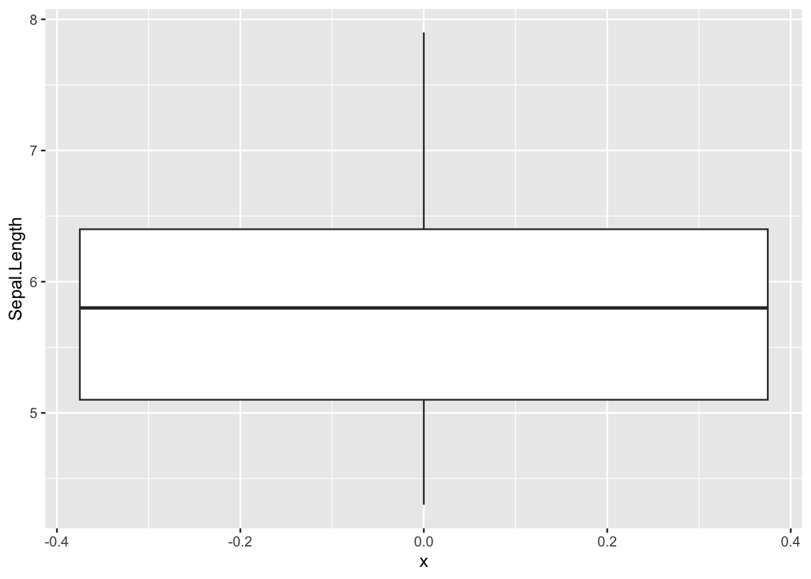
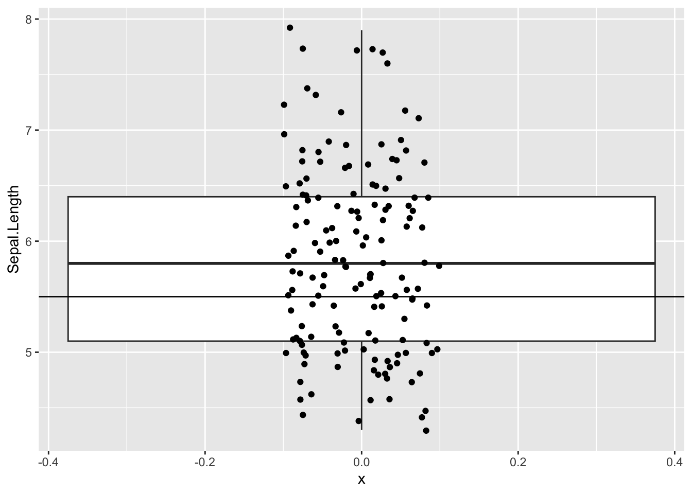
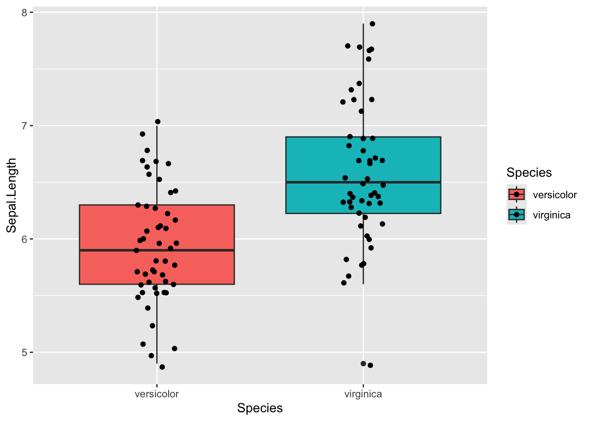
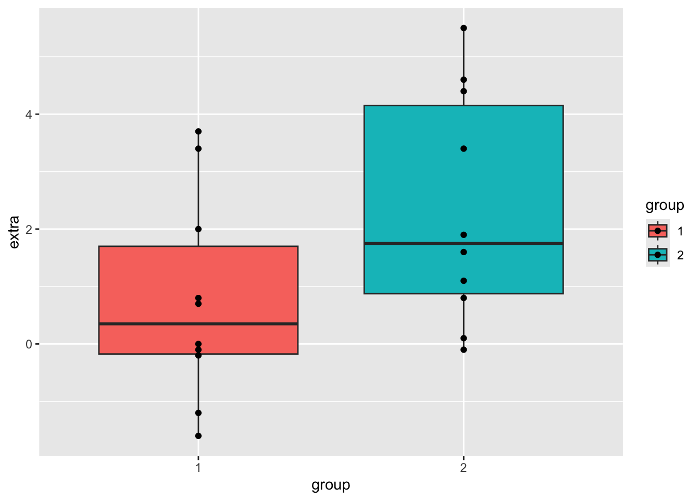
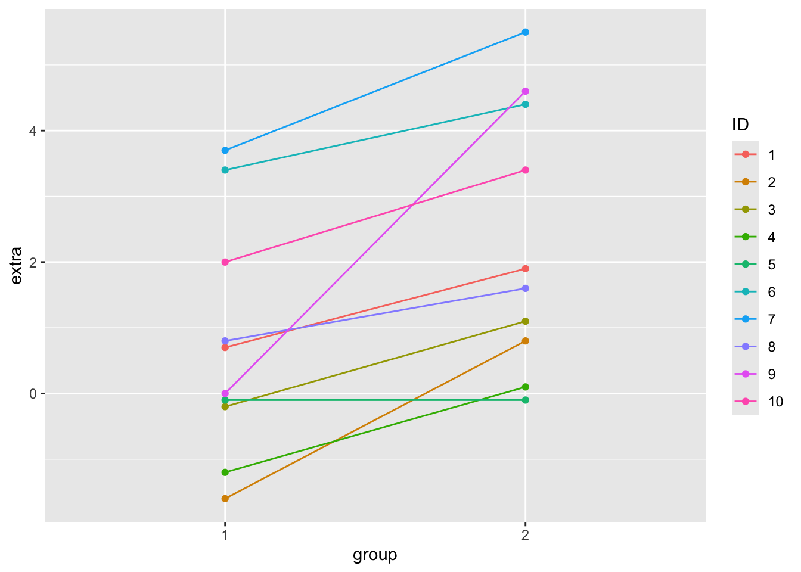
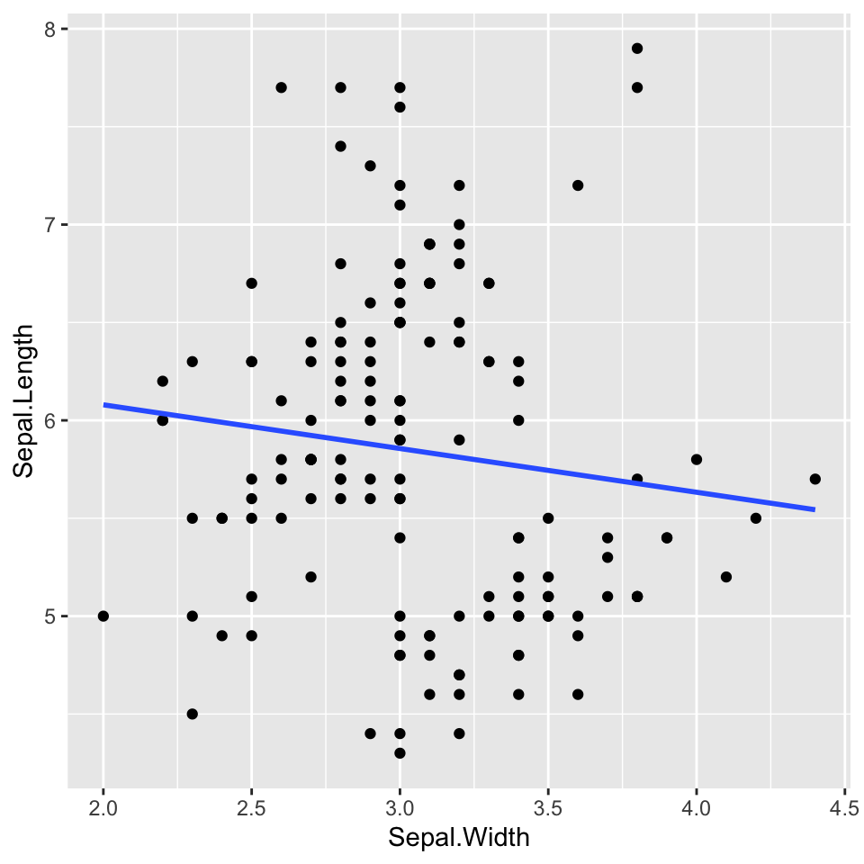

# load libraries
library(tidyverse)
library(viridis)
library(broom)Statistics in R
2020-03-18 Statistics in R
We’ve finally gotten to what R was meant for! Statistics!
T-test
One sample t-ttest
For testing the mean of some continuous data against a known mean.
ggplot(iris, aes(x =0 , y=Sepal.Length)) +
geom_boxplot()
iris$Sepal.Length [1] 5.1 4.9 4.7 4.6 5.0 5.4 4.6 5.0 4.4 4.9 5.4 4.8 4.8 4.3 5.8 5.7 5.4 5.1
[19] 5.7 5.1 5.4 5.1 4.6 5.1 4.8 5.0 5.0 5.2 5.2 4.7 4.8 5.4 5.2 5.5 4.9 5.0
[37] 5.5 4.9 4.4 5.1 5.0 4.5 4.4 5.0 5.1 4.8 5.1 4.6 5.3 5.0 7.0 6.4 6.9 5.5
[55] 6.5 5.7 6.3 4.9 6.6 5.2 5.0 5.9 6.0 6.1 5.6 6.7 5.6 5.8 6.2 5.6 5.9 6.1
[73] 6.3 6.1 6.4 6.6 6.8 6.7 6.0 5.7 5.5 5.5 5.8 6.0 5.4 6.0 6.7 6.3 5.6 5.5
[91] 5.5 6.1 5.8 5.0 5.6 5.7 5.7 6.2 5.1 5.7 6.3 5.8 7.1 6.3 6.5 7.6 4.9 7.3
[109] 6.7 7.2 6.5 6.4 6.8 5.7 5.8 6.4 6.5 7.7 7.7 6.0 6.9 5.6 7.7 6.3 6.7 7.2
[127] 6.2 6.1 6.4 7.2 7.4 7.9 6.4 6.3 6.1 7.7 6.3 6.4 6.0 6.9 6.7 6.9 5.8 6.8
[145] 6.7 6.7 6.3 6.5 6.2 5.9### significant result
t.test(iris$Sepal.Length, mu = 10)
One Sample t-test
data: iris$Sepal.Length
t = -61.479, df = 149, p-value < 2.2e-16
alternative hypothesis: true mean is not equal to 10
95 percent confidence interval:
5.709732 5.976934
sample estimates:
mean of x
5.843333 ### non-significant result
t.test(iris$Sepal.Length, mu = 5.8)
One Sample t-test
data: iris$Sepal.Length
t = 0.64092, df = 149, p-value = 0.5226
alternative hypothesis: true mean is not equal to 5.8
95 percent confidence interval:
5.709732 5.976934
sample estimates:
mean of x
5.843333 Lets vizualize what we are testing
ggplot(iris, aes(x =0 , y=Sepal.Length)) +
geom_boxplot() +
geom_jitter(width = 0.1) +
geom_hline(yintercept = 5.5 ) #, color='red', linewidth = 2, linetype = 'dashed')
Using broom functions to tidy up t.test()
t.test(iris$Sepal.Length, mu = 5)
One Sample t-test
data: iris$Sepal.Length
t = 12.473, df = 149, p-value < 2.2e-16
alternative hypothesis: true mean is not equal to 5
95 percent confidence interval:
5.709732 5.976934
sample estimates:
mean of x
5.843333 # tidy()
# Gets the result of the test
t.test(iris$Sepal.Length, mu = 5) %>% tidy()# A tibble: 1 × 8
estimate statistic p.value parameter conf.low conf.high method alternative
<dbl> <dbl> <dbl> <dbl> <dbl> <dbl> <chr> <chr>
1 5.84 12.5 6.67e-25 149 5.71 5.98 One Samp… two.sided # glance()
# Gets the model parameters; frequently some of the columns will be the same as
# the ones you get with tidy(). With t.test() tidy() and glance() actually
# return exactly the same results.
t.test(iris$Sepal.Length, mu = 5) %>% glance()# A tibble: 1 × 8
estimate statistic p.value parameter conf.low conf.high method alternative
<dbl> <dbl> <dbl> <dbl> <dbl> <dbl> <chr> <chr>
1 5.84 12.5 6.67e-25 149 5.71 5.98 One Samp… two.sided Two sample t-test
For testing the difference in means between two groups
unpaired
This is the standard t-test that you should use by default
# How to pipe into t.test
iris %>%
# filter out one species, because we can only test two groups
filter(Species != 'setosa') %>%
# Syntax is numeric variable ~ grouping variable
# Need to use . when piping; this tells t.test() that the table is being piped in
t.test(Sepal.Length ~ Species, data = .)
Welch Two Sample t-test
data: Sepal.Length by Species
t = -5.6292, df = 94.025, p-value = 1.866e-07
alternative hypothesis: true difference in means between group versicolor and group virginica is not equal to 0
95 percent confidence interval:
-0.8819731 -0.4220269
sample estimates:
mean in group versicolor mean in group virginica
5.936 6.588 ### with tidy()
iris %>%
filter(Species != 'setosa') %>%
t.test(Sepal.Length ~ Species, data = .) %>%
tidy()# A tibble: 1 × 10
estimate estimate1 estimate2 statistic p.value parameter conf.low conf.high
<dbl> <dbl> <dbl> <dbl> <dbl> <dbl> <dbl> <dbl>
1 -0.652 5.94 6.59 -5.63 1.87e-7 94.0 -0.882 -0.422
# ℹ 2 more variables: method <chr>, alternative <chr>Lets vizualize what we are testing
iris %>%
filter(Species != 'setosa') %>%
ggplot(aes(x = Species , y=Sepal.Length, fill = Species)) +
geom_boxplot() +
geom_jitter(width = 0.1)
what going under hood of R test
vector_1 <- iris %>%
filter(Species=="versicolor") %>%
select(Sepal.Length)
vector_2 <- iris %>%
filter(Species=="virginica") %>%
select(Sepal.Length)
vector_1 Sepal.Length
1 7.0
2 6.4
3 6.9
4 5.5
5 6.5
6 5.7
7 6.3
8 4.9
9 6.6
10 5.2
11 5.0
12 5.9
13 6.0
14 6.1
15 5.6
16 6.7
17 5.6
18 5.8
19 6.2
20 5.6
21 5.9
22 6.1
23 6.3
24 6.1
25 6.4
26 6.6
27 6.8
28 6.7
29 6.0
30 5.7
31 5.5
32 5.5
33 5.8
34 6.0
35 5.4
36 6.0
37 6.7
38 6.3
39 5.6
40 5.5
41 5.5
42 6.1
43 5.8
44 5.0
45 5.6
46 5.7
47 5.7
48 6.2
49 5.1
50 5.7vector_2 Sepal.Length
1 6.3
2 5.8
3 7.1
4 6.3
5 6.5
6 7.6
7 4.9
8 7.3
9 6.7
10 7.2
11 6.5
12 6.4
13 6.8
14 5.7
15 5.8
16 6.4
17 6.5
18 7.7
19 7.7
20 6.0
21 6.9
22 5.6
23 7.7
24 6.3
25 6.7
26 7.2
27 6.2
28 6.1
29 6.4
30 7.2
31 7.4
32 7.9
33 6.4
34 6.3
35 6.1
36 7.7
37 6.3
38 6.4
39 6.0
40 6.9
41 6.7
42 6.9
43 5.8
44 6.8
45 6.7
46 6.7
47 6.3
48 6.5
49 6.2
50 5.9t.test(vector_1, vector_2)
Welch Two Sample t-test
data: vector_1 and vector_2
t = -5.6292, df = 94.025, p-value = 1.866e-07
alternative hypothesis: true difference in means is not equal to 0
95 percent confidence interval:
-0.8819731 -0.4220269
sample estimates:
mean of x mean of y
5.936 6.588 even more underhood
# iris$Sepal.Length
# iris$Species == "versicolor"
# iris[iris$Species=="versicolor",]
iris[iris$Species=="versicolor",]$Sepal.Length [1] 7.0 6.4 6.9 5.5 6.5 5.7 6.3 4.9 6.6 5.2 5.0 5.9 6.0 6.1 5.6 6.7 5.6 5.8 6.2
[20] 5.6 5.9 6.1 6.3 6.1 6.4 6.6 6.8 6.7 6.0 5.7 5.5 5.5 5.8 6.0 5.4 6.0 6.7 6.3
[39] 5.6 5.5 5.5 6.1 5.8 5.0 5.6 5.7 5.7 6.2 5.1 5.7iris[iris$Species=="virginica",]$Sepal.Length [1] 6.3 5.8 7.1 6.3 6.5 7.6 4.9 7.3 6.7 7.2 6.5 6.4 6.8 5.7 5.8 6.4 6.5 7.7 7.7
[20] 6.0 6.9 5.6 7.7 6.3 6.7 7.2 6.2 6.1 6.4 7.2 7.4 7.9 6.4 6.3 6.1 7.7 6.3 6.4
[39] 6.0 6.9 6.7 6.9 5.8 6.8 6.7 6.7 6.3 6.5 6.2 5.9vector_1 <- iris[iris$Species=="versicolor",]$Sepal.Length
vector_2 <- iris[iris$Species=="virginica",]$Sepal.Length
vector_1 [1] 7.0 6.4 6.9 5.5 6.5 5.7 6.3 4.9 6.6 5.2 5.0 5.9 6.0 6.1 5.6 6.7 5.6 5.8 6.2
[20] 5.6 5.9 6.1 6.3 6.1 6.4 6.6 6.8 6.7 6.0 5.7 5.5 5.5 5.8 6.0 5.4 6.0 6.7 6.3
[39] 5.6 5.5 5.5 6.1 5.8 5.0 5.6 5.7 5.7 6.2 5.1 5.7vector_2 [1] 6.3 5.8 7.1 6.3 6.5 7.6 4.9 7.3 6.7 7.2 6.5 6.4 6.8 5.7 5.8 6.4 6.5 7.7 7.7
[20] 6.0 6.9 5.6 7.7 6.3 6.7 7.2 6.2 6.1 6.4 7.2 7.4 7.9 6.4 6.3 6.1 7.7 6.3 6.4
[39] 6.0 6.9 6.7 6.9 5.8 6.8 6.7 6.7 6.3 6.5 6.2 5.9t.test(vector_1, vector_2)
Welch Two Sample t-test
data: vector_1 and vector_2
t = -5.6292, df = 94.025, p-value = 1.866e-07
alternative hypothesis: true difference in means is not equal to 0
95 percent confidence interval:
-0.8819731 -0.4220269
sample estimates:
mean of x mean of y
5.936 6.588 Paired
You can use a paired t-test when a natural pairing exists between the data, for example individuals before and after treatment with some drugs, student test scores at the beginning of the year vs the end of the year, tumor and normal tissue samples from the same individual. The built-in sleep dataset gives the extra sleep time for a group of individuals treated with two different drugs. The columns contain:
- extra = numeric increase in hours of sleep
- group = drug given
- ID = patient ID
Let’s look at the sleep table first.
sleep %>%
ggplot(aes(x = group, y = extra, fill=group)) +
geom_boxplot() +
geom_point() #+
#geom_line(aes(group = ID))
sleep %>%
ggplot(aes(x = group, y = extra, colour = ID)) +
geom_point() +
geom_line(aes(group = ID))
To do a paired t-test, set the argument paired = T. Let’s compare doing a paired and an unpaired t-test on the same data. A paired t-test will always give you a more significant result.
## Paired t-test
## The sleep data is actually paired, so could have been in wide format:
sleep_wide <- pivot_wider(sleep, names_from = group, values_from = "extra") #%>%
sleep_wide <- sleep_wide %>%
rename(time_1 = "1",
time_2 = "2")# on long data()
t.test(data = sleep, extra ~ group)
Welch Two Sample t-test
data: extra by group
t = -1.8608, df = 17.776, p-value = 0.07939
alternative hypothesis: true difference in means between group 1 and group 2 is not equal to 0
95 percent confidence interval:
-3.3654832 0.2054832
sample estimates:
mean in group 1 mean in group 2
0.75 2.33 # wide data
t.test(sleep_wide$time_1, sleep_wide$time_2)
Welch Two Sample t-test
data: sleep_wide$time_1 and sleep_wide$time_2
t = -1.8608, df = 17.776, p-value = 0.07939
alternative hypothesis: true difference in means is not equal to 0
95 percent confidence interval:
-3.3654832 0.2054832
sample estimates:
mean of x mean of y
0.75 2.33 Traditional interface
# wide data
t.test(sleep_wide$time_1, sleep_wide$time_2, paired = TRUE)
Paired t-test
data: sleep_wide$time_1 and sleep_wide$time_2
t = -4.0621, df = 9, p-value = 0.002833
alternative hypothesis: true mean difference is not equal to 0
95 percent confidence interval:
-2.4598858 -0.7001142
sample estimates:
mean difference
-1.58 Formula interface
# wide data
t.test(Pair(time_1,time_2) ~ 1, data=sleep_wide)
Paired t-test
data: Pair(time_1, time_2)
t = -4.0621, df = 9, p-value = 0.002833
alternative hypothesis: true mean difference is not equal to 0
95 percent confidence interval:
-2.4598858 -0.7001142
sample estimates:
mean difference
-1.58 chi-square
mtcars mpg cyl disp hp drat wt qsec vs am gear carb
Mazda RX4 21.0 6 160.0 110 3.90 2.620 16.46 0 1 4 4
Mazda RX4 Wag 21.0 6 160.0 110 3.90 2.875 17.02 0 1 4 4
Datsun 710 22.8 4 108.0 93 3.85 2.320 18.61 1 1 4 1
Hornet 4 Drive 21.4 6 258.0 110 3.08 3.215 19.44 1 0 3 1
Hornet Sportabout 18.7 8 360.0 175 3.15 3.440 17.02 0 0 3 2
Valiant 18.1 6 225.0 105 2.76 3.460 20.22 1 0 3 1
Duster 360 14.3 8 360.0 245 3.21 3.570 15.84 0 0 3 4
Merc 240D 24.4 4 146.7 62 3.69 3.190 20.00 1 0 4 2
Merc 230 22.8 4 140.8 95 3.92 3.150 22.90 1 0 4 2
Merc 280 19.2 6 167.6 123 3.92 3.440 18.30 1 0 4 4
Merc 280C 17.8 6 167.6 123 3.92 3.440 18.90 1 0 4 4
Merc 450SE 16.4 8 275.8 180 3.07 4.070 17.40 0 0 3 3
Merc 450SL 17.3 8 275.8 180 3.07 3.730 17.60 0 0 3 3
Merc 450SLC 15.2 8 275.8 180 3.07 3.780 18.00 0 0 3 3
Cadillac Fleetwood 10.4 8 472.0 205 2.93 5.250 17.98 0 0 3 4
Lincoln Continental 10.4 8 460.0 215 3.00 5.424 17.82 0 0 3 4
Chrysler Imperial 14.7 8 440.0 230 3.23 5.345 17.42 0 0 3 4
Fiat 128 32.4 4 78.7 66 4.08 2.200 19.47 1 1 4 1
Honda Civic 30.4 4 75.7 52 4.93 1.615 18.52 1 1 4 2
Toyota Corolla 33.9 4 71.1 65 4.22 1.835 19.90 1 1 4 1
Toyota Corona 21.5 4 120.1 97 3.70 2.465 20.01 1 0 3 1
Dodge Challenger 15.5 8 318.0 150 2.76 3.520 16.87 0 0 3 2
AMC Javelin 15.2 8 304.0 150 3.15 3.435 17.30 0 0 3 2
Camaro Z28 13.3 8 350.0 245 3.73 3.840 15.41 0 0 3 4
Pontiac Firebird 19.2 8 400.0 175 3.08 3.845 17.05 0 0 3 2
Fiat X1-9 27.3 4 79.0 66 4.08 1.935 18.90 1 1 4 1
Porsche 914-2 26.0 4 120.3 91 4.43 2.140 16.70 0 1 5 2
Lotus Europa 30.4 4 95.1 113 3.77 1.513 16.90 1 1 5 2
Ford Pantera L 15.8 8 351.0 264 4.22 3.170 14.50 0 1 5 4
Ferrari Dino 19.7 6 145.0 175 3.62 2.770 15.50 0 1 5 6
Maserati Bora 15.0 8 301.0 335 3.54 3.570 14.60 0 1 5 8
Volvo 142E 21.4 4 121.0 109 4.11 2.780 18.60 1 1 4 2Do a chi-square test
chisq.test(mtcars$carb, mtcars$cyl)Warning in chisq.test(mtcars$carb, mtcars$cyl): Chi-squared approximation may
be incorrect
Pearson's Chi-squared test
data: mtcars$carb and mtcars$cyl
X-squared = 24.389, df = 10, p-value = 0.006632What does it look like using the broom functions?
chisq.test(mtcars$carb, mtcars$cyl) %>% tidy() Warning in chisq.test(mtcars$carb, mtcars$cyl): Chi-squared approximation may
be incorrect# A tibble: 1 × 4
statistic p.value parameter method
<dbl> <dbl> <int> <chr>
1 24.4 0.00663 10 Pearson's Chi-squared testchisq.test(mtcars$carb, mtcars$cyl) %>% glance()Warning in chisq.test(mtcars$carb, mtcars$cyl): Chi-squared approximation may
be incorrect# A tibble: 1 × 4
statistic p.value parameter method
<dbl> <dbl> <int> <chr>
1 24.4 0.00663 10 Pearson's Chi-squared testchisq.test(mtcars$carb, mtcars$cyl) %>% augment()Warning in chisq.test(mtcars$carb, mtcars$cyl): Chi-squared approximation may
be incorrect# A tibble: 18 × 9
mtcars.carb mtcars.cyl .observed .prop .row.prop .col.prop .expected .resid
<fct> <fct> <int> <dbl> <dbl> <dbl> <dbl> <dbl>
1 1 4 5 0.156 0.714 0.455 2.41 1.67
2 2 4 6 0.188 0.6 0.545 3.44 1.38
3 3 4 0 0 0 0 1.03 -1.02
4 4 4 0 0 0 0 3.44 -1.85
5 6 4 0 0 0 0 0.344 -0.586
6 8 4 0 0 0 0 0.344 -0.586
7 1 6 2 0.0625 0.286 0.286 1.53 0.379
8 2 6 0 0 0 0 2.19 -1.48
9 3 6 0 0 0 0 0.656 -0.810
10 4 6 4 0.125 0.4 0.571 2.19 1.23
11 6 6 1 0.0312 1 0.143 0.219 1.67
12 8 6 0 0 0 0 0.219 -0.468
13 1 8 0 0 0 0 3.06 -1.75
14 2 8 4 0.125 0.4 0.286 4.38 -0.179
15 3 8 3 0.0938 1 0.214 1.31 1.47
16 4 8 6 0.188 0.6 0.429 4.38 0.777
17 6 8 0 0 0 0 0.438 -0.661
18 8 8 1 0.0312 1 0.0714 0.438 0.850
# ℹ 1 more variable: .std.resid <dbl>ANOVA
Look at the data
chickwts weight feed
1 179 horsebean
2 160 horsebean
3 136 horsebean
4 227 horsebean
5 217 horsebean
6 168 horsebean
7 108 horsebean
8 124 horsebean
9 143 horsebean
10 140 horsebean
11 309 linseed
12 229 linseed
13 181 linseed
14 141 linseed
15 260 linseed
16 203 linseed
17 148 linseed
18 169 linseed
19 213 linseed
20 257 linseed
21 244 linseed
22 271 linseed
23 243 soybean
24 230 soybean
25 248 soybean
26 327 soybean
27 329 soybean
28 250 soybean
29 193 soybean
30 271 soybean
31 316 soybean
32 267 soybean
33 199 soybean
34 171 soybean
35 158 soybean
36 248 soybean
37 423 sunflower
38 340 sunflower
39 392 sunflower
40 339 sunflower
41 341 sunflower
42 226 sunflower
43 320 sunflower
44 295 sunflower
45 334 sunflower
46 322 sunflower
47 297 sunflower
48 318 sunflower
49 325 meatmeal
50 257 meatmeal
51 303 meatmeal
52 315 meatmeal
53 380 meatmeal
54 153 meatmeal
55 263 meatmeal
56 242 meatmeal
57 206 meatmeal
58 344 meatmeal
59 258 meatmeal
60 368 casein
61 390 casein
62 379 casein
63 260 casein
64 404 casein
65 318 casein
66 352 casein
67 359 casein
68 216 casein
69 222 casein
70 283 casein
71 332 caseinchickwts %>% distinct(feed) feed
1 horsebean
2 linseed
3 soybean
4 sunflower
5 meatmeal
6 caseinDo the test
aov(weight ~ feed, data = chickwts)Call:
aov(formula = weight ~ feed, data = chickwts)
Terms:
feed Residuals
Sum of Squares 231129.2 195556.0
Deg. of Freedom 5 65
Residual standard error: 54.85029
Estimated effects may be unbalancedaov(weight ~ feed, data = chickwts) %>% summary() Df Sum Sq Mean Sq F value Pr(>F)
feed 5 231129 46226 15.37 5.94e-10 ***
Residuals 65 195556 3009
---
Signif. codes: 0 '***' 0.001 '**' 0.01 '*' 0.05 '.' 0.1 ' ' 1What does it look like with the different broom functions?
aov(weight ~ feed, data = chickwts) %>% tidy()# A tibble: 2 × 6
term df sumsq meansq statistic p.value
<chr> <dbl> <dbl> <dbl> <dbl> <dbl>
1 feed 5 231129. 46226. 15.4 5.94e-10
2 Residuals 65 195556. 3009. NA NA aov(weight ~ feed, data = chickwts) %>% glance()# A tibble: 1 × 6
logLik AIC BIC deviance nobs r.squared
<dbl> <dbl> <dbl> <dbl> <int> <dbl>
1 -382. 778. 794. 195556. 71 0.542aov(weight ~ feed, data = chickwts) %>% augment()Warning: The `augment()` method for objects of class `aov` is not maintained by the broom team, and is only supported through the `lm` tidier method. Please be cautious in interpreting and reporting broom output.
This warning is displayed once per session.# A tibble: 71 × 8
weight feed .fitted .resid .hat .sigma .cooksd .std.resid
<dbl> <fct> <dbl> <dbl> <dbl> <dbl> <dbl> <dbl>
1 179 horsebean 160. 18.8 0.100 55.2 0.00242 0.361
2 160 horsebean 160. -0.200 0.1 55.3 0.000000274 -0.00384
3 136 horsebean 160. -24.2 0.100 55.2 0.00401 -0.465
4 227 horsebean 160. 66.8 0.100 54.6 0.0305 1.28
5 217 horsebean 160. 56.8 0.100 54.8 0.0221 1.09
6 168 horsebean 160. 7.80 0.100 55.3 0.000416 0.150
7 108 horsebean 160. -52.2 0.100 54.8 0.0186 -1.00
8 124 horsebean 160. -36.2 0.100 55.1 0.00896 -0.696
9 143 horsebean 160. -17.2 0.100 55.2 0.00202 -0.331
10 140 horsebean 160. -20.2 0.100 55.2 0.00279 -0.388
# ℹ 61 more rowsPost-Hoc Tukey Test
Tukey test explicitly compares all different functions
aov(weight ~ feed, data = chickwts) %>% summary() Df Sum Sq Mean Sq F value Pr(>F)
feed 5 231129 46226 15.37 5.94e-10 ***
Residuals 65 195556 3009
---
Signif. codes: 0 '***' 0.001 '**' 0.01 '*' 0.05 '.' 0.1 ' ' 1print('---')[1] "---"aov(weight ~ feed, data = chickwts) %>% TukeyHSD() Tukey multiple comparisons of means
95% family-wise confidence level
Fit: aov(formula = weight ~ feed, data = chickwts)
$feed
diff lwr upr p adj
horsebean-casein -163.383333 -232.346876 -94.41979 0.0000000
linseed-casein -104.833333 -170.587491 -39.07918 0.0002100
meatmeal-casein -46.674242 -113.906207 20.55772 0.3324584
soybean-casein -77.154762 -140.517054 -13.79247 0.0083653
sunflower-casein 5.333333 -60.420825 71.08749 0.9998902
linseed-horsebean 58.550000 -10.413543 127.51354 0.1413329
meatmeal-horsebean 116.709091 46.335105 187.08308 0.0001062
soybean-horsebean 86.228571 19.541684 152.91546 0.0042167
sunflower-horsebean 168.716667 99.753124 237.68021 0.0000000
meatmeal-linseed 58.159091 -9.072873 125.39106 0.1276965
soybean-linseed 27.678571 -35.683721 91.04086 0.7932853
sunflower-linseed 110.166667 44.412509 175.92082 0.0000884
soybean-meatmeal -30.480519 -95.375109 34.41407 0.7391356
sunflower-meatmeal 52.007576 -15.224388 119.23954 0.2206962
sunflower-soybean 82.488095 19.125803 145.85039 0.0038845What does it look like with the different broom functions?
aov(weight ~ feed, data = chickwts) %>% TukeyHSD() %>% tidy()# A tibble: 15 × 7
term contrast null.value estimate conf.low conf.high adj.p.value
<chr> <chr> <dbl> <dbl> <dbl> <dbl> <dbl>
1 feed horsebean-casein 0 -163. -232. -94.4 0.0000000307
2 feed linseed-casein 0 -105. -171. -39.1 0.000210
3 feed meatmeal-casein 0 -46.7 -114. 20.6 0.332
4 feed soybean-casein 0 -77.2 -141. -13.8 0.00837
5 feed sunflower-casein 0 5.33 -60.4 71.1 1.00
6 feed linseed-horsebean 0 58.6 -10.4 128. 0.141
7 feed meatmeal-horsebean 0 117. 46.3 187. 0.000106
8 feed soybean-horsebean 0 86.2 19.5 153. 0.00422
9 feed sunflower-horsebean 0 169. 99.8 238. 0.0000000122
10 feed meatmeal-linseed 0 58.2 -9.07 125. 0.128
11 feed soybean-linseed 0 27.7 -35.7 91.0 0.793
12 feed sunflower-linseed 0 110. 44.4 176. 0.0000884
13 feed soybean-meatmeal 0 -30.5 -95.4 34.4 0.739
14 feed sunflower-meatmeal 0 52.0 -15.2 119. 0.221
15 feed sunflower-soybean 0 82.5 19.1 146. 0.00388 # aov(weight ~ feed, data = chickwts) %>% TukeyHSD() %>% glance()
# aov(weight ~ feed, data = chickwts) %>% TukeyHSD() %>% augment()Linear Model
ggplot(iris, aes(x = Sepal.Width, y = Sepal.Length)) +
geom_point() +
geom_smooth(method = 'lm', se = F)`geom_smooth()` using formula = 'y ~ x'
Do the test
### y ~ x
lm(Sepal.Length ~ Sepal.Width, data = iris) %>% summary()
Call:
lm(formula = Sepal.Length ~ Sepal.Width, data = iris)
Residuals:
Min 1Q Median 3Q Max
-1.5561 -0.6333 -0.1120 0.5579 2.2226
Coefficients:
Estimate Std. Error t value Pr(>|t|)
(Intercept) 6.5262 0.4789 13.63 <2e-16 ***
Sepal.Width -0.2234 0.1551 -1.44 0.152
---
Signif. codes: 0 '***' 0.001 '**' 0.01 '*' 0.05 '.' 0.1 ' ' 1
Residual standard error: 0.8251 on 148 degrees of freedom
Multiple R-squared: 0.01382, Adjusted R-squared: 0.007159
F-statistic: 2.074 on 1 and 148 DF, p-value: 0.1519lm(Sepal.Width ~ Sepal.Length, data = iris) %>% summary()
Call:
lm(formula = Sepal.Width ~ Sepal.Length, data = iris)
Residuals:
Min 1Q Median 3Q Max
-1.1095 -0.2454 -0.0167 0.2763 1.3338
Coefficients:
Estimate Std. Error t value Pr(>|t|)
(Intercept) 3.41895 0.25356 13.48 <2e-16 ***
Sepal.Length -0.06188 0.04297 -1.44 0.152
---
Signif. codes: 0 '***' 0.001 '**' 0.01 '*' 0.05 '.' 0.1 ' ' 1
Residual standard error: 0.4343 on 148 degrees of freedom
Multiple R-squared: 0.01382, Adjusted R-squared: 0.007159
F-statistic: 2.074 on 1 and 148 DF, p-value: 0.1519What does it look like with the different broom functions?
lm(Sepal.Length ~ Sepal.Width, data = iris) %>% tidy()# A tibble: 2 × 5
term estimate std.error statistic p.value
<chr> <dbl> <dbl> <dbl> <dbl>
1 (Intercept) 6.53 0.479 13.6 6.47e-28
2 Sepal.Width -0.223 0.155 -1.44 1.52e- 1lm(Sepal.Length ~ Sepal.Width, data = iris) %>% glance()# A tibble: 1 × 12
r.squared adj.r.squared sigma statistic p.value df logLik AIC BIC
<dbl> <dbl> <dbl> <dbl> <dbl> <dbl> <dbl> <dbl> <dbl>
1 0.0138 0.00716 0.825 2.07 0.152 1 -183. 372. 381.
# ℹ 3 more variables: deviance <dbl>, df.residual <int>, nobs <int>lm(Sepal.Length ~ Sepal.Width, data = iris) %>% augment(iris)# A tibble: 150 × 11
Sepal.Length Sepal.Width Petal.Length Petal.Width Species .fitted .resid
<dbl> <dbl> <dbl> <dbl> <fct> <dbl> <dbl>
1 5.1 3.5 1.4 0.2 setosa 5.74 -0.644
2 4.9 3 1.4 0.2 setosa 5.86 -0.956
3 4.7 3.2 1.3 0.2 setosa 5.81 -1.11
4 4.6 3.1 1.5 0.2 setosa 5.83 -1.23
5 5 3.6 1.4 0.2 setosa 5.72 -0.722
6 5.4 3.9 1.7 0.4 setosa 5.66 -0.255
7 4.6 3.4 1.4 0.3 setosa 5.77 -1.17
8 5 3.4 1.5 0.2 setosa 5.77 -0.767
9 4.4 2.9 1.4 0.2 setosa 5.88 -1.48
10 4.9 3.1 1.5 0.1 setosa 5.83 -0.934
# ℹ 140 more rows
# ℹ 4 more variables: .hat <dbl>, .sigma <dbl>, .cooksd <dbl>, .std.resid <dbl>